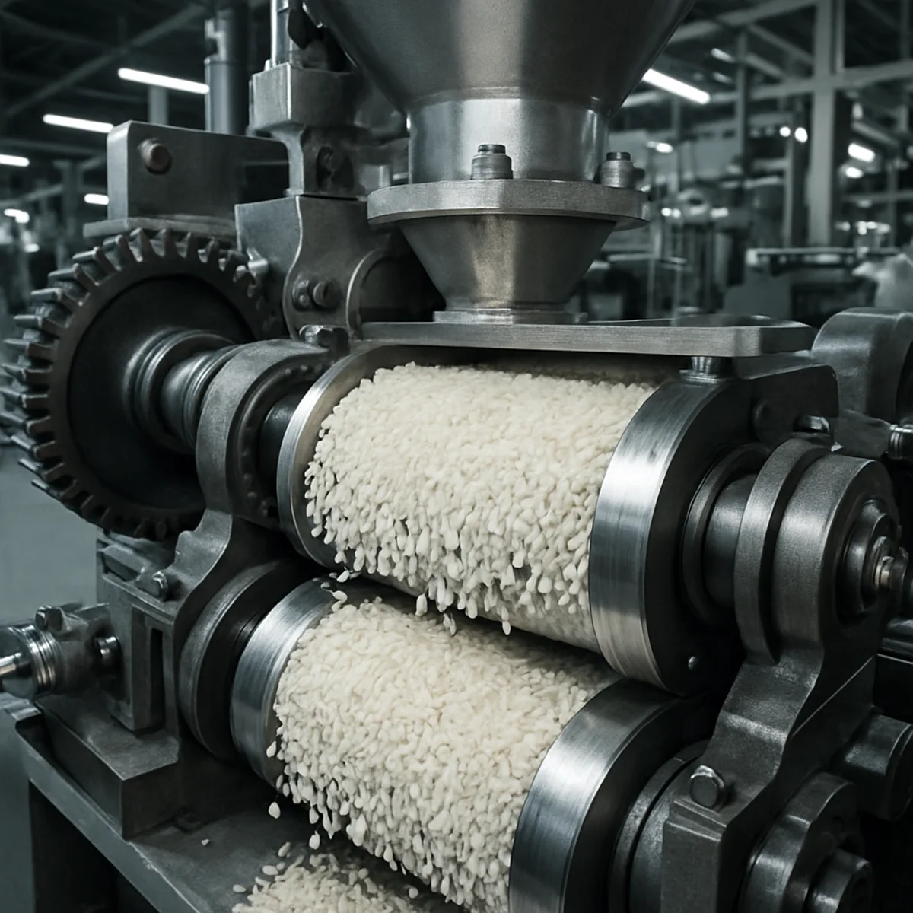

Infrastructure, ethics and impact. Keerthi Nirmal’s state-of-the-art rice manufacturing facility near Kochi processes over 700 tonnes daily using ISO-certified production, advanced technology, and environmentally responsible practices.
700+TONNES PROCESSED DAILY
30,000+RETAIL & WHOLESALE OUTLETS
345DELIVERY VEHICLES
₹900+CRORE ANNUAL TURNOVER
01 / A FOUNDATION FOR QUALITY
Infrastructure.
As one of the leading rice manufacturers in Kerala, Keerthi Nirmal has built an integrated rice manufacturing facility designed to deliver quality, efficiency and consistency at every stage of production. Located in the pollution-free Matoor Township near Kochi, our manufacturing campus combines advanced processing technology, modern warehousing and stringent quality control to produce premium rice and allied food products trusted across Kerala.
Our Matoor Township facility processes over 700 tonnes of paddy every day, generating an annual turnover of ₹900+ crore. Through a robust distribution network, we serve 30,000+ retail and wholesale outlets across Kerala, supported by a fleet of 345 delivery vehicles that ensure timely and reliable delivery.
Every stage of production, from paddy procurement and cleaning to milling, grading, packaging and dispatch, is monitored by experienced professionals using advanced quality assurance systems to maintain the highest standards of food safety and product consistency.

PRECISION AT EVERY STAGE. QUALITY IN EVERY GRAIN.
02 / BUILT TO DELIVER
Production capacity.
Our manufacturing facility is equipped with globally advanced processing systems capable of handling every stage of rice production with precision and efficiency. From de-stoning, cleaning and drying to de-husking, bran removal, polishing, grading and sorting, every process is designed to preserve the natural quality, nutrition and flavour of the grain.
Continuous investment in infrastructure, technology and skilled professionals enables us to meet growing market demand while maintaining the consistent quality that has made Keerthi Nirmal one of Kerala’s most trusted rice brands.
Innovation plays a central role in our manufacturing operations. Our technology infrastructure combines advanced machinery with intelligent systems to improve efficiency, quality and sustainability across the entire production process.
Key technologies include:
01 Advanced indent cylinder milling systems for precise grain separation.
02 Galaxy Environ Effluent Treatment Plant (ETP) for sustainable wastewater management.
03 CSIR-NIIST licensed water treatment technology.
04 Modern warehouse management systems for efficient inventory control.
05 Integrated quality control and laboratory testing facilities.
06 Online shopping platform supporting convenient customer access across Kerala.
04 / GOODNESS WITHIN REACH
Warehousing & distribution.
Efficient storage and logistics are essential to maintaining product freshness and quality. Our large-scale warehouses are designed to store both raw materials and finished products under carefully controlled conditions.
An advanced warehouse management system enables efficient inventory tracking, hygienic storage and seamless dispatch operations. Supported by a fleet of 345 vehicles, our distribution network ensures that Keerthi Nirmal products reach more than 30,000 retail and wholesale outlets across Kerala safely and on time.
From our mills to your neighbourhood. Freshness travels with us.
↗
05 / CORPORATE SOCIAL RESPONSIBILITY
Our responsibility. Beyond the grain.
Stronger communities. A healthier environment. A shared future worth growing.
01 / PEOPLE
Supporting our farming communities
As a responsible FMCG company in Kerala, we believe sustainable growth begins with stronger communities. Our success is built on long-term relationships with farmers, employees, distributors and consumers who contribute to our journey every day.
Through our CSR initiatives, we focus on supporting agricultural communities, improving livelihoods and creating opportunities for sustainable development.
Our initiatives include:
Supporting 700+ farming families through long-term procurement partnerships
Community development programmes across the Ernakulam district
Farmer engagement and knowledge-sharing initiatives
Employee welfare and community participation programmes
02 / PLANET
Environmental responsibility
Protecting the environment is a fundamental part of our manufacturing philosophy. We continuously invest in cleaner technologies and sustainable practices to reduce our environmental footprint while improving operational efficiency.
Our environmental initiatives include:
Advanced Effluent Treatment Plant for responsible wastewater management
CSIR-NIIST licensed water treatment technology
Biogas plant that converts organic waste into renewable energy
Rainwater harvesting systems that promote water conservation
Continuous energy-efficiency improvements across manufacturing operations
03 / COMMUNITY
Public welfare
Beyond manufacturing, we remain committed to creating a positive social impact. We actively support charitable initiatives, encourage employee volunteering and contribute to programmes that improve education, health and community well-being.
Working closely with local communities, our subsidiaries and partners continue to strengthen regional development while promoting long-term social progress across Kerala.
✳
When our communities thrive, we all grow.
LET’S GROW TOGETHER
Partner with Kerala’s largest rice network.
Keerthi Nirmal welcomes partnerships with businesses seeking a trusted rice manufacturing and distribution partner.
Whether you are looking for:
Dealership opportunities
Distribution partnerships
Institutional supply
Wholesale procurement
Export enquiries
Our experienced team is ready to support your business with reliable products, efficient logistics and long-term partnership opportunities.